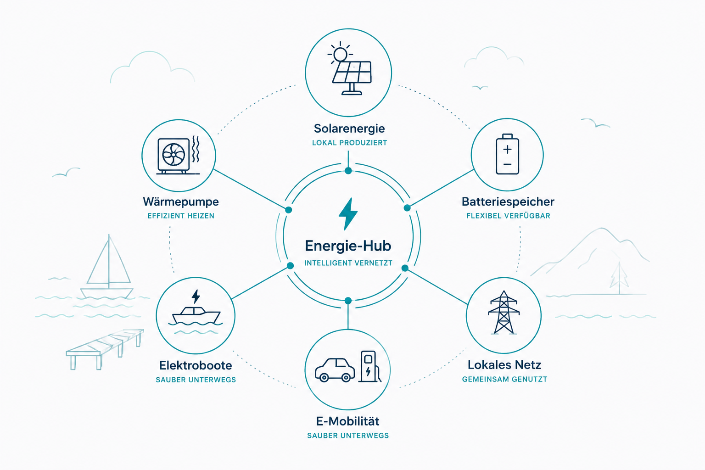
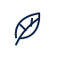
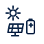
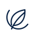
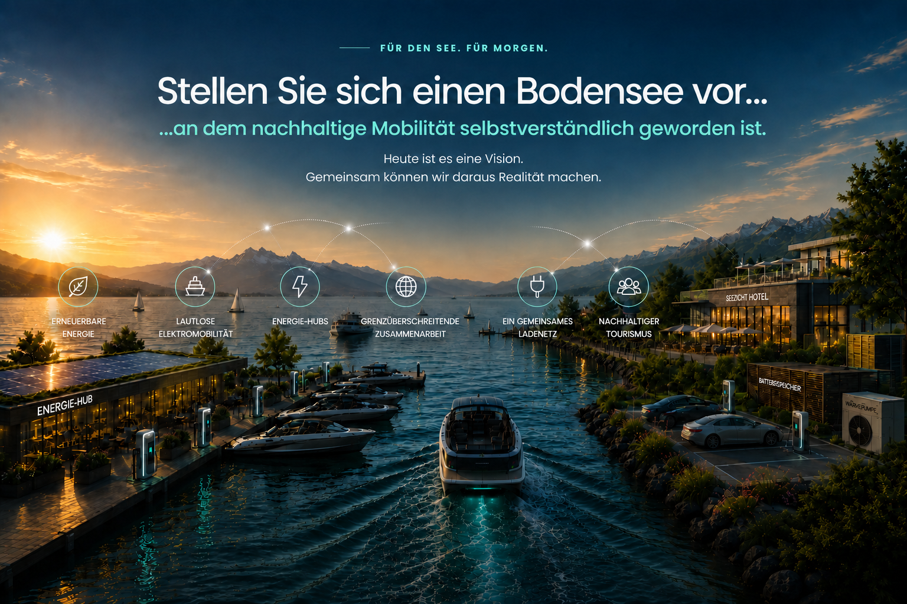

Bedarf verstehen
Gemeinden, Häfen, Unternehmen und die Bevölkerung bringen ihre Erfahrungen und Bedürfnisse ein.
eine Initiative im Aufbau
Nicht irgendwann. Sondern jetzt.
Die Elektrifizierung ist der erste Schritt auf dem Weg zu Bodensee 2035. Gemeinsam entsteht ein grenzüberschreitendes Ladenetz für Elektroboote – erneuerbar, intelligent und offen für alle.

Die Idee
Der Anfang einer neuen Mobilität auf dem Wasser.
Elektroboote sind bereit für den Bodensee. Was fehlt, ist ein Netz, das sie verbindet.
Ein Hafen kann mehr sein als ein Ladeort. Er kann zum Energie-Hub werden – einem Ort, an dem erneuerbare Energie intelligent erzeugt, gespeichert, genutzt und künftig auch bidirektional verfügbar gemacht wird.
„Wir schaffen die Plattform.
Die besten Ideen bringen Sie mit.“
Das vernetzte System
Der Hafen wird zum Ausgangspunkt eines intelligenten Energiesystems – für Mobilität, Gemeinden und die gesamte Bodenseeregion.


Nachhaltigfür Mensch und Natur
ErneuerbarEnergie aus der Region
Vernetztintelligent verbunden Offenfür alle, die mitgestaltenUnser Weg
Neue Ideen entstehen dort, wo Menschen ihre Erfahrungen teilen. Wir schaffen den Raum, damit daraus konkrete Lösungen werden.
Gemeinden, Häfen, Unternehmen und die Bevölkerung bringen ihre Erfahrungen und Bedürfnisse ein.
Aus einzelnen Standorten entsteht Schritt für Schritt ein grenzüberschreitendes Netz.
Pilotstandorte schaffen die Grundlage für den Ausbau weiterer Standorte.
Mitgestalten
Ob auf dem Wasser, im Hafen, in der Gemeinde oder im Unternehmen: Wählen Sie die Gruppe, die zu Ihnen passt, und sagen Sie uns, was aus Ihrer Sicht jetzt wichtig ist.
Ihre Perspektive
Dauer: ungefähr 3–5 Minuten

Mitgestalten